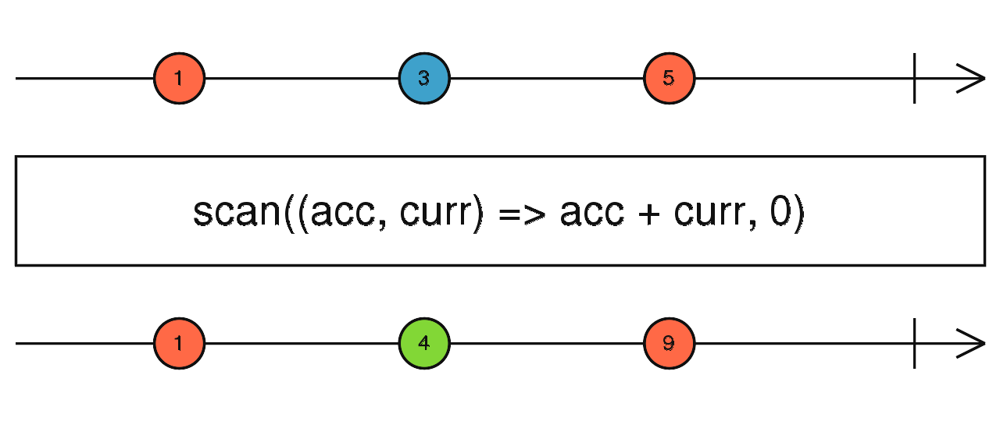
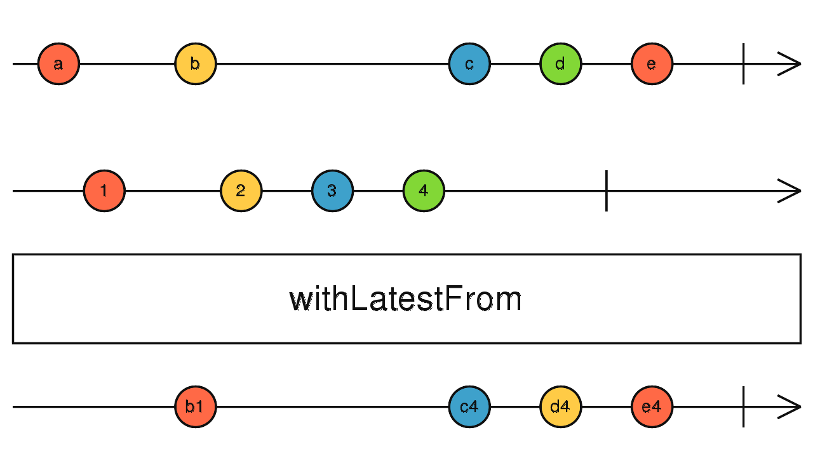
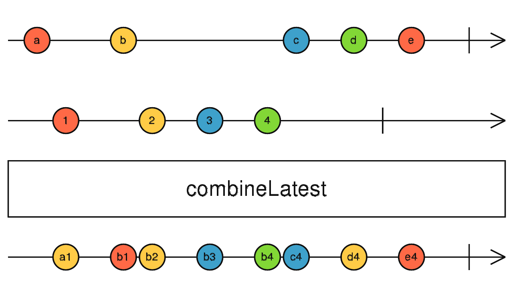

Angular 2:
Intruduction to the RxJS
Reactive Programming
"In computing, reactive programming is a programming paradigm oriented around data flows and the propagation of change." - Wikipedia
"Reactive programming is programming with asynchronous data streams." - Andre Staltz
Non-reactive way
var a = 5;
var b = 10;
var c = a + b;
a = 10;
c == 20; // false
Reactive way
var a = 5;
var b = 10;
var c = a + b;
a = 10;
c == 20; // true
Object-oriented reactive programming
Instead of methods and fields, objects have reactions that automatically re-evaluate when the other reactions they depend on have been modified.
Functional reactive programming
Functional Reactive Programming is a variant of Reactive Programming that follows Functional Programming principles such as referential transparency, and seeks to be purely functional.
Implementations in JS:
- Bacon.js - small functional reactive programming lib for JavaScript.
- Cycle.js - fully reactive JavaScript framework for Human-Computer Interaction.
- Elm - type inferred, functional reactive language that compiles to HTML, CSS, and JavaScript.
- Kefir - reactive programming library for JavaScript.
- RxJS - reactive extensions for JavaScript.
ReactiveX
ReactiveX is more than an API, it's an idea and a breakthrough in programming. It has inspired several other APIs, frameworks, and even programming languages.
Languages
ReactiveX for platforms and frameworks
Who uses ReactiveX?
RxJS
set of libraries to compose asynchronous and event-based programs using observable collections and Array#extras style composition in JavaScript
RxJS 4.0 vs 5.0
RxJS 5 is a ground-up rewrite of RxJS that actually began development when RxJS was in 2.0. This new version of RxJS had three basic goals:
- Better performance
- Better debugging
- Compliance with the ES7 Observable Spec
Differences:
- Observer Interface Changes (.onNext(value) -> .next(value))
- Subscription dispose is unsubscribe
- Operators Renamed or Removed (flatMapLatest -> switchMap, where -> filter)
- Operator Splits (map -> map and mapTo)
Migrating from RxJS 4 to 5
The essential concepts in RxJS which solve async event management are:
- Observable: represents the idea of an invokable collection of future values or events.
- Observer: is a collection of callbacks that knows how to listen to values delivered by the Observable.
- Subscription: represents the execution of an Observable, is primarily useful for cancelling the execution.
- Operators: are pure functions that enable a functional programming style of dealing with collections with operations like
map,filter,concat,flatMap, etc. - Subject: is the equivalent to an EventEmitter, and the only way of multicasting a value or event to multiple Observers.
- Schedulers: are centralized dispatchers to control concurrency, allowing us to coordinate when computation happens on e.g.
setTimeoutorrequestAnimationFrameor others.
Observable
Creating observable
var observable = Rx.Observable.create(function (observer) {
observer.next(1);
observer.next(2);
observer.next(3);
setTimeout(() => {
observer.next(4);
observer.complete();
}, 1000);
});
Subscribing observable
observable.subscribe(
(x) => console.log('got value ' + x),
(err) => console.error('something wrong occurred: ' + err),
() => console.log('done')
);
Observable can be created from:
- Array
- Array-like object (e.g. DOM elements)
- Event
- Iterable object
- Observable-like
- Promise
Observable vs Promise
- Observables are cancellable
- Observables are not executed without observer
- Observables have operators
Cold vs hot observable
Producer - source of values for observable.
Cold observable
- creates the producer
- activates the producer
- starts listening to the producer
- unicast
Hot observable
- shares a reference to a producer
- starts listening to the producer
- multicast
Cold observable
const source = new Observable((observer) => {
const socket = new WebSocket('ws://someurl');
socket.addEventListener('message', (e) => observer.next(e));
return () => socket.close();
});
Hot observable
const socket = new WebSocket('ws://someurl');
const source = new Observable((observer) => {
socket.addEventListener('message', (e) => observer.next(e));
});
Most useful operators
map
Like Array.prototype.map(), it passes each source value through a transformation function to get corresponding output values.
filter
Like Array.prototype.filter(), it only emits a value from the source if it passes a criterion function.

scan
It's like reduce, but emits the current accumulation whenever the source emits a value.
do
Intercepts each emission on the source and runs a function, but returns an output which is identical to the source.
withLatestFrom
Whenever the source Observable emits a value, it computes a formula using that value plus the latest values from other input Observables, then emits the output of that formula.
combineLatest
Whenever any input Observable emits a value, it computes a formula using the latest values from all the inputs, then emits the output of that formula.
switchMap (flatMapLatest in RxJS 4)
Maps each value to an Observable, then flattens all of these inner Observables using switch